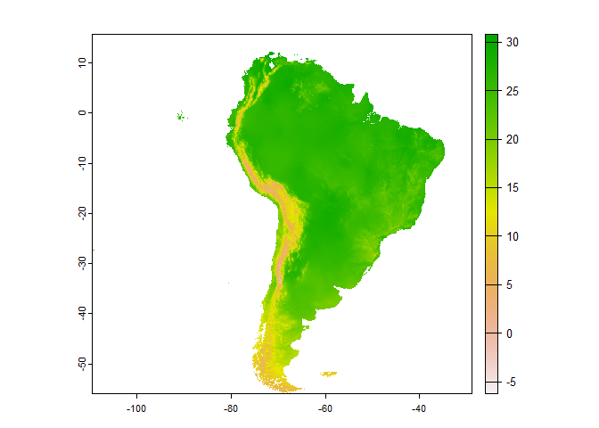
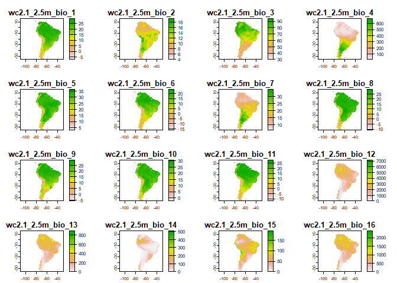

##download bioclimatic data from WorldClim in R
envData aims to facilitate the interaction with WorldClim data. It provides a simple interface for downloading WorldClim bioclimatic layers in R, with support for caching and filtering retrieved data by continent.
envData is designed for easy integration of bioclimatic data into ecological niche model pipelines. It provides a simple interface for accessing and filtering bioclimatic data.
Installation
You can install the development version of envData from GitHub using the remotes packages:
remotes::install_github("alrobles/envData")Usage
The first time using the package the user will experiment long wait times. This is because the package is locally caching the information.
It is possible to test if the server is online:
library(envData)
get_bioclim("test")
#> [1] "Bioclimatic data is online"The R packages has two main R functions. * get_bio_layer: returns an specific bioclimatic layer (i. e. bio_18) for the entire world (default) or for a given continent. We plot the output with the help of the terra R package:
library(envData)
library(terra)
#> Warning: package 'terra' was built under R version 4.2.3
#> terra 1.7.39
test <- get_bio_layer("bio_10", "South America")
plot(test)
By the other hand get_bioclim() will download all the layersfor the entire world. Also it is possible to provide a continent to get all the bioclimatic layers:
South_America <- get_bioclim(continent = "South America")
#> [=====>------------------------------------------------] 2/19 ( 11%) eta: 2s
#> [========>---------------------------------------------] 3/19 ( 16%) eta: 3s
#> [==========>-------------------------------------------] 4/19 ( 21%) eta: 3s
#> [=============>----------------------------------------] 5/19 ( 26%) eta: 3s
#> [================>-------------------------------------] 6/19 ( 32%) eta: 3s
#> [===================>----------------------------------] 7/19 ( 37%) eta: 2s
#> [======================>-------------------------------] 8/19 ( 42%) eta: 2s
#> [=========================>----------------------------] 9/19 ( 47%) eta: 2s
#> [===========================>-------------------------] 10/19 ( 53%) eta: 2s
#> [==============================>----------------------] 11/19 ( 58%) eta: 1s
#> [================================>--------------------] 12/19 ( 63%) eta: 1s
#> [===================================>-----------------] 13/19 ( 68%) eta: 1s
#> [======================================>--------------] 14/19 ( 74%) eta: 1s
#> [=========================================>-----------] 15/19 ( 79%) eta: 1s
#> [============================================>--------] 16/19 ( 84%) eta: 1s
#> [==============================================>------] 17/19 ( 89%) eta: 0s
#> [=================================================>---] 18/19 ( 95%) eta: 0s
#> [=====================================================] 19/19 (100%) eta: 0s
plot(South_America)
How it workds
The original bioclimatic data stored in WorldClim is stored in [TIFF]{https://en.wikipedia.org/wiki/TIFF} format. envData provides a bridge to acces this data storing on a DigitalOcean Space Object Storage the original data as rds binary files ready to read by the terra R package. Additionally we envData provides previously cropped layers by continent enhancing the manipulaiton in the R environment.
This functionality significantly reduces the download and clipping time of bioclimatic layers with a GIS in an Ecological Niche Modelling pipeline.
Citation
Please follow the instructions from the authors when citing WorldClim data. At time of writing, this includes a citation to the paper the describing the WorldClim database:
- Fick, S.E. and R.J. Hijmans, 2017. [WorldClim 2: new 1km spatial resolution climate surfaces for global land areas]{https://doi.org/10.1002/joc.5086}. International Journal of Climatology 37 (12): 4302-4315.
Use citation("envData") for more details and the references in BibTeX format.